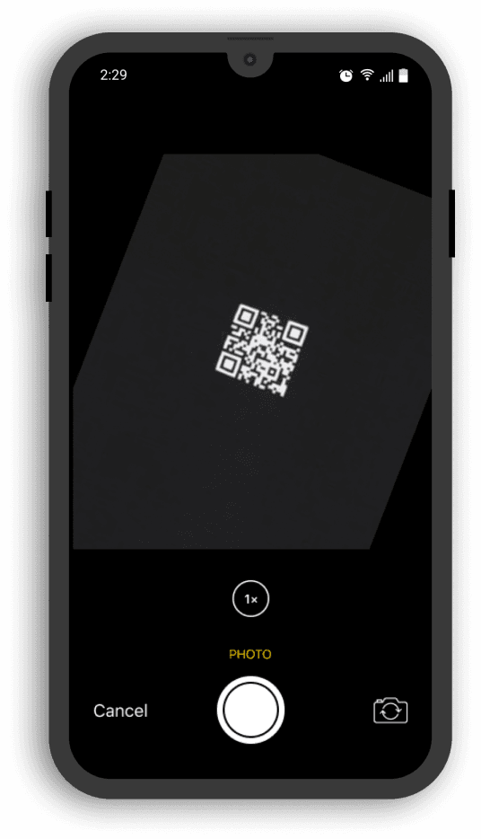
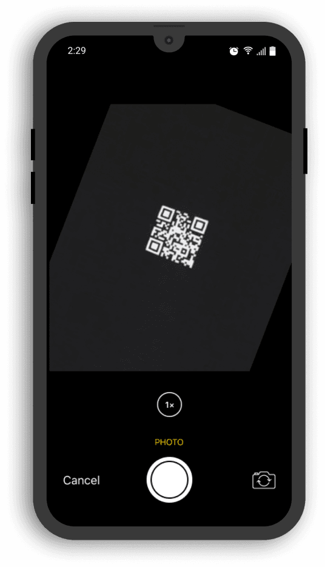

Профайлы фондов
Мы сделали отображение фондов ещё прозрачнее. Кликнув на иконку того или иного фонда на карте, пользователю предоставляется информация со всеми актуальными и завершенными делами.


Подтверждение участия в помощи по QR-коду
Волонтёр выбирает из списка дело и отправляет заявку на участие. Её рассматривает и подтверждает организатор из фонда. При оказании помощи участник получает от организатора QR-код, после сканирования которого в приложении подтверждается опыт волонтёра.
 

Диплинки на подопечных и события
Теперь пользователь самостоятельно может создать ссылку на интересующего его подопечного и поделиться ею с другими пользователями или отправить любому человеку не из приложения.